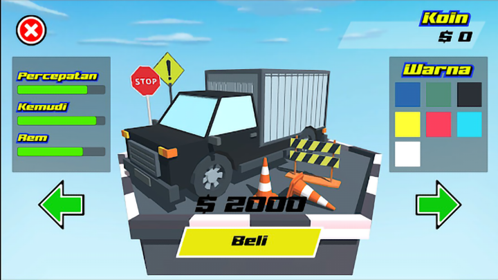
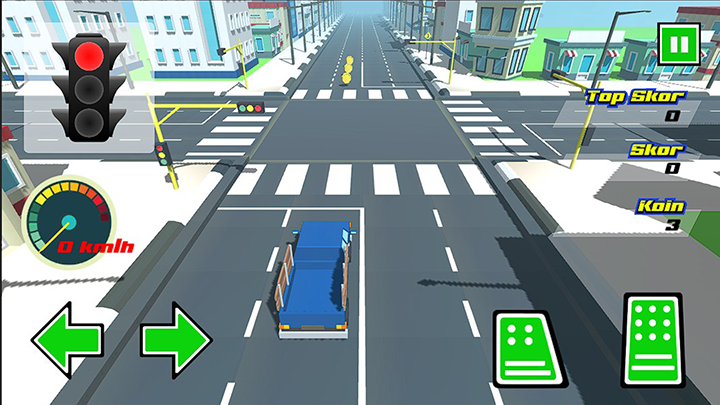

Unity Developer | Multiplayer | AR & VR
RambuGo! is an educational simulation designed to teach players about the fundamentals of road traffic rules in a fun and interactive way. Players navigate a four-wheeled vehicle through various traffic situations, with the primary goal of learning and understanding basic road safety principles. The game's unique approach combines entertainment with education, allowing players to become familiar with traffic signs and regulations while engaging in an immersive gameplay experience. You can download the game here.
RambuGo! was originally developed for two prominent competitions, Gemastik XIII and CoDig 3.0. We are proud to have reached the finals in both, showcasing our dedication to creating a meaningful educational tool. The game was a collaborative effort involving a team of three, where I took on the role of team leader and programmer. My responsibilities included not only coding the game's mechanics but also managing the overall project direction, ensuring that our team met deadlines and maintained a consistent vision for the game.
In terms of gameplay, RambuGo! adopts an arcade-style format where players are challenged to drive as far as possible while adhering to traffic rules. Throughout the game, players encounter various road signs and situations that require them to respond correctly, promoting awareness of real-world traffic regulations. Additionally, players collect coins along their journey, which can be used to purchase new vehicles, adding an element of progression and replayability. This mechanic encourages players to perform well, respect traffic laws, and strive to improve their high score with each attempt.
RambuGo! offers a rewarding experience that blends skill-based challenges with educational content, making it an ideal tool for players of all ages to learn about road safety while having fun. The game's engaging format and focus on practical knowledge make it a valuable addition to the educational game genre, and we are thrilled to see the positive impact it has had in both competitions.
